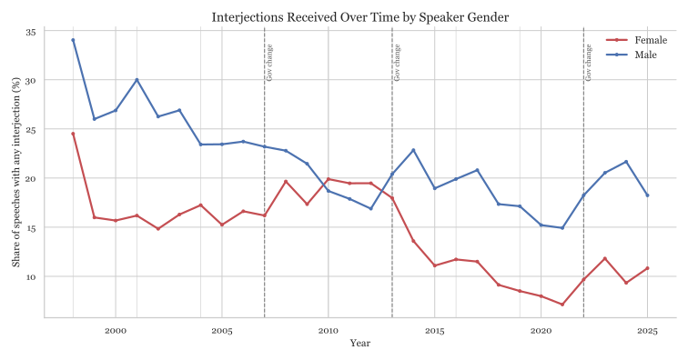
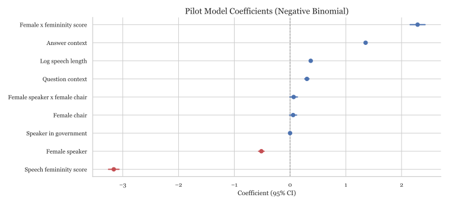
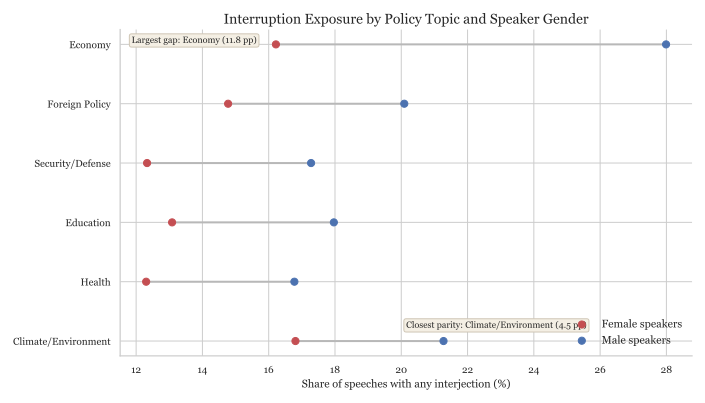
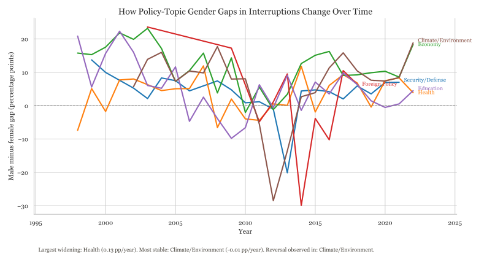

A data story on how parliamentary interjections differ by speaker gender, party, and speech style.
Speech events analyzed
200,229
Total heckles
0
Gender and Heckling in Parliament

Scroll (or tap chapters) to switch between yearly, gap, party, chair-gender, and longer-speech views.
The gender gap is persistent across years
This graph tracks the share of speeches receiving any interjection for male and female speakers over time, with election years and government turnover annotated. Men are heckled more than women in most years, with notable compression and occasional reversals around the Gillard period.
Annual gap view
Positive values indicate years where male speakers had a higher probability of receiving interjections.
The gap between women and men heckled differs by party
Some show near parity (ALP/Greens); others show much wider (Independents) separation.
Chair gender may condition interruptions
This comparison splits speaker-level interruption rates by whether the presiding officer is a woman or a man. In the current data, interjections are slightly lower when women chair, and the male-female interruption gap is narrower under female chairs (about 6.2 pp) than under male chairs (about 8.3 pp).
Longer speeches attract more interventions
Interjection risk rises with speech length for both genders, but not equally. At short speech lengths, men and women are near parity; as speeches lengthen, interruption risk rises faster for men, and the gender gap widens.
What Predicts Heckling?
This interactive view shows model-estimated effect sizes with 95% confidence intervals.
Femininity score
Text-based measure of speech style: higher values indicate language patterns that are more feminine-coded in the model's training data.
is included as a predictor in the model.
How to read this graph: points to the right of zero are associated with more interjections, points to the left with fewer. Longer horizontal bars indicate more statistical uncertainty; if a bar crosses zero, the direction of the effect is less certain.

Topics and Heckling
I use a transparent policy-topic dictionary (security/defense, health, economy, foreign policy, education, climate/environment) and test whether interruption exposure differs by speaker gender within each topic and over time.
Cross-Sectional Pattern
Interruption gaps differ sharply across policy domains
Economy shows the largest male-minus-female interruption gap, while education and health are closer to parity.

Dynamic Pattern
Interactive Topic Explorer: gap trends over time
This view tracks yearly male-minus-female interruption gaps by policy topic to identify widening, narrowing, and reversal dynamics.
Australia EPU is built from 8 newspapers (1998 onward): monthly article counts containing
uncertainty terms + economy terms + policy terms, scaled by all articles per paper-month,
standardized within paper, then averaged and rescaled to mean 100 over 1998-2012.

Largest widening gap
Computed from current run
Topic where the male-minus-female interruption gap is increasing fastest each year.
Topic reversal
Computed from current run
Topic where the gap crosses zero at least once (direction flips over time).
Stable parity-like topic
Computed from current run
Topic with the flattest trend in the gap (closest to no change over time).
Most converged topic
Computing from current run
Topic where the absolute gender gap moved closest toward zero over time.
Most volatile topic
Computing from current run
Topic with the largest year-to-year fluctuation in the gender gap.
Largest recent shift
Computing from current run
Difference in average gap between 2016-2025 and 1998-2007.
Method note
Each speech is assigned to one policy topic using a transparent keyword dictionary; the chart tracks the yearly male-minus-female interruption-rate gap (in percentage points) within each topic.
Heckling Profiles: Parties and MPs
This section shows who heckles most over time by party, and lets readers look up any MP in the corpus by name or unique ID.
Party coding uses AustralianPoliticians as the base crosswalk and a uniqueID-year patch from observed Hansard party labels through 2025.
Party Dynamics
Party heckling rates over time
Rates are calculated as interjecting turns per 100 speaking turns within each party and year.
Interpretation: a higher line means members of that party interjected more often during their speaking turns in that year.
Reader Tool
Look up an MP’s heckling profile
Search by surname, full name, or unique ID. Rankings below are shown among MPs with at least 200 speaking turns.
Use the toggle to switch between MPs who interject most (hecklers) and MPs who are interrupted most (heckled MPs).